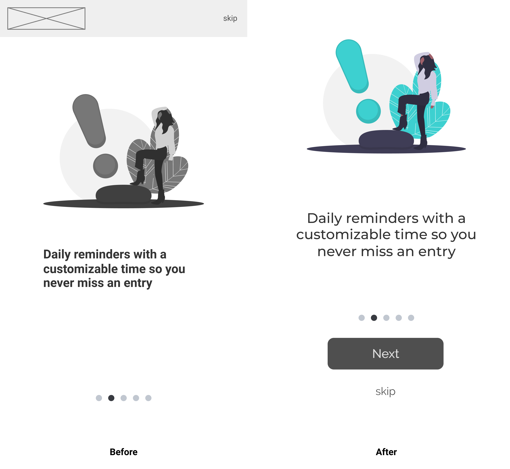
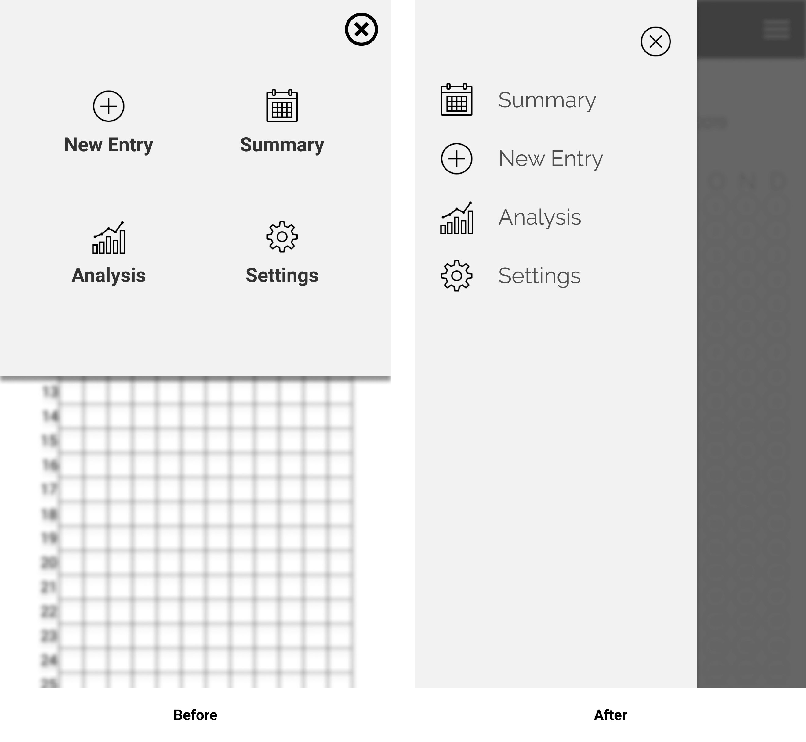
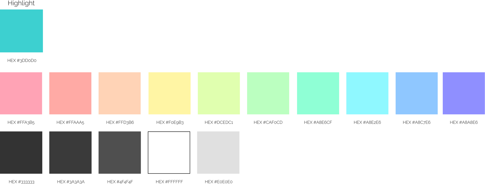

Sitemap & Content Strategy
I then drafted the sitemap and content strategy doc to detail how the pages within the application are going to be laid out as well as detail what is going to be on that page.
Sketching Ideas
Before committing wireframes to Figma, wireframe sketches were created on paper to aid in rapid prototyping and allow quick iterations.

Wireframing
Wireframing I
Upon iterative sketching and moving onto wireframing it became clear that one immediate iteration would be needed. After some additional confirmatory feedback via usability testing it became clear that adding a series of on-boarding screens would ensure the most user friendly experience; and so on-boarding screens were added to explain the features of the application before signing up.
Wireframing II
After the first round of wireframes we realized that there were way too many on boarding screens for users to swipe through and many of these screens could be combined to create a more streamlined signup process. On-boarding images were also added and the drawer re-designed to better accommodate icons.
Hifi Mockups
Hifi I
After gaining feedback during wireframe usability testing a few key changes were made. First, the landing background gradient was changed to be more unique and modern to better fit the feel of the app. The images were changed to have the same highlight color to have a cohesive look and skip & next buttons were placed at the bottom so they are easy to find. The drawer was also changed back to a long drawer but it now takes up over 60% of the screen for better readability and usability.
Hifi II
We liked the look of the previous mockup but it didn’t invoke the feelings we wanted it to; something was missing. After some rethinking and brainstorming; we had an idea and Mood got a darker color scheme with a whole new feel. By eliminating the bright landing screen and changing the majority of the screen backgrounds to dark Mood took on a more sleek and modern look all while reducing eyestrain for short or extended periods of time.

Prototype(s)
Prototype I
After completing a few minor changes and finalizing the previous frames I created a testing script and used Invision to create and test the first interactive prototype for a round of formal user testing.

Prototype II
Before another round of iterations formal in-person usability tests were done on two different types of potential users utilizing a testing script to test the product usability. The feedback was majorly positive with only one minor complaint; users want a demo verson. Keeping this feedback in mind, a more detailed prototype was created; now with a demo feature to try the app before signing up and set daily reminder interactivity.
Prototype III - Final
After finishing the changes from the user testing the opportunity arose to further refine and develop an interactive prototype. This time around both the frames and the prototype were made using Figma to help aid in rapid refinement and testing. This additional time to refine and prototype immensely benefited the project and lead to changes in button coloring, new entry process, and app-wide interactivity.
Testing the Wireframes
After the completion of the digital wireframes some quick informal user testing was done to assess the app’s usability. I tested users' ability to sign up for an account, record a new journal entry, analyze summary, view settings, and add new mood. After usability testing the following iterations were made and the revised wireframes created.
Iterations
Due to confusion on how to navigate the on-boarding besides “skip”, a "next" button was added.
Due to additional confusion and negative comments on the drawer layout, the drawer was also redesigned to be full length instead of half-screen coming from the top.
A/B Testing
During iterations, I was conflicted on the colors for the splash and landing page designs so I created and deployed a quick A/B preference test to get some feedback and finalize my decision.
Results
The results were very conclusive with option B receiving 75% of responses. This turned out to be a very helpful and successful preference test because the majority of responses received aligned with the Mood brand and ideals as well as overall project design.
Design Progression - Onboarding
These onboarding frames show the design progression from the initial wireframe concept to the final prototype design.
Branding & Identity

Mind Map & Thought List
I created a mind map and thought list while brainstorming the branding for this project to help visualize and create the Mood brand.
Brand Ideals
Modern • With a minimalist interface, recognizable fonts, and a refined color palette Mood is a modern app built for the 21st century.
Secure • All your private emotions and journals are stored within the application but your data never leaves your device so your private data stays private.
Motivational • Motivates you to journal daily to record, analyze, and manage your emotional health.
Colorful • Using preset or custom colors to represent associated emotions; visualize your moods in your yearly summary, monthly analysis, or daily journal.
Calm • The use of a dark background and non-aggressive color scheme invoke calming feelings.
Colors
Using color palette of a soft rainbow gradient of colors for the logo and a bright turquoise as the highlight color paired with dark greys and white It gives the feeling of security, creativity, and refinement to the brand and app.
Logo Design
After creating a mind map and thought list I settled on the name "Mood" for the project and started sketching out logo designs. After sketching out ideas I digitally re-created a few of the best ideas and settled on and quick preference test was done to determine which logo style would be further refined and developed to become the final Mood logo.
Takeaways
A lot of things went really well with this project and I am super happy with the result; it has come a long way. The logo and the color scheme for Mood perfectly represent what I wanted Mood to feel like. One of the things that clearly worked well on this project was changing the background color to dark; it gives it a more refined and modern feel. The user survey I crafted for this project was a big improvement in utility over past user surveys. One of the main things that I wish I could have done differently is fully record all of my user testing completed. Many of the earlier tests I did without recording or taking many notes; just using the feedback. This saved me a little time initially but in the long run a recording could have been a much better asset than some scattered notes. I also wish I would have completed more preference tests because the few I did helped me immensely. Throughout the duration of this project I kept a design journal to help record and organize my thoughts and documents. That journal became an invaluable resource not only throughout the project but also the creation of the case study. I fully intend on keeping a design journal for all my future projects as well. Throughout the course of this project we had a lot of successes but also some failures but in both some important lessons were learned.
Key Lessons Learned
- You can never do too many preference tests
- Record every usability test
- Keep crafting good surveys
- Keep a design journal for every project